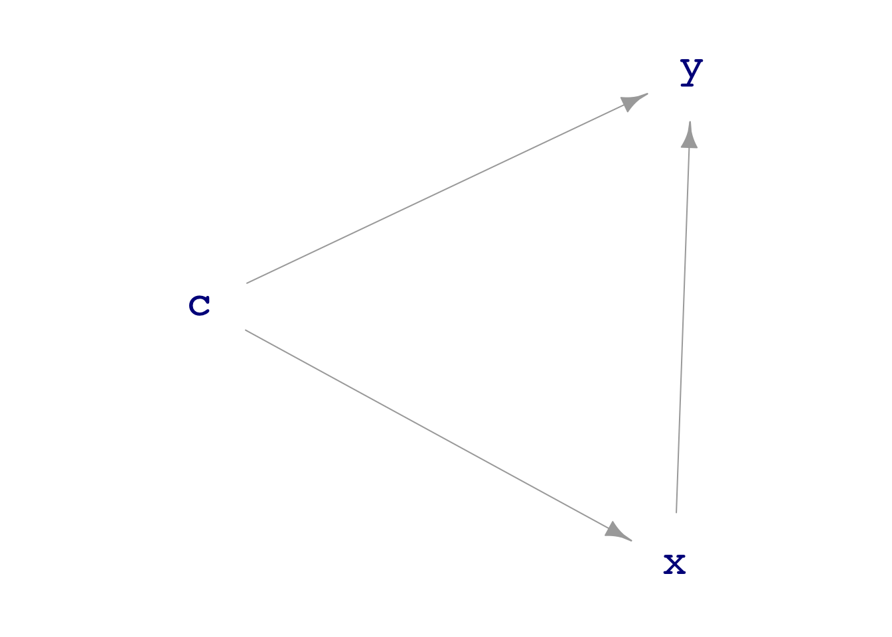
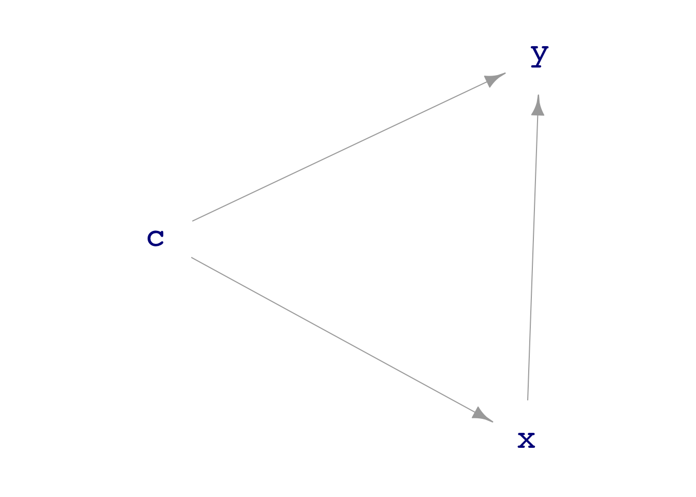
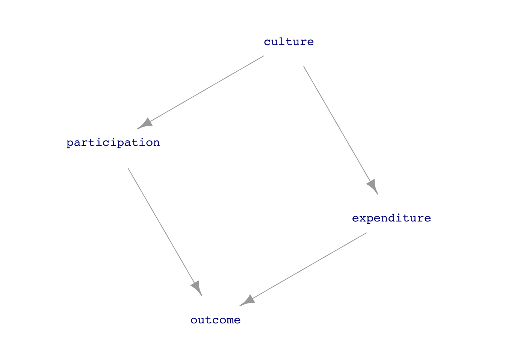
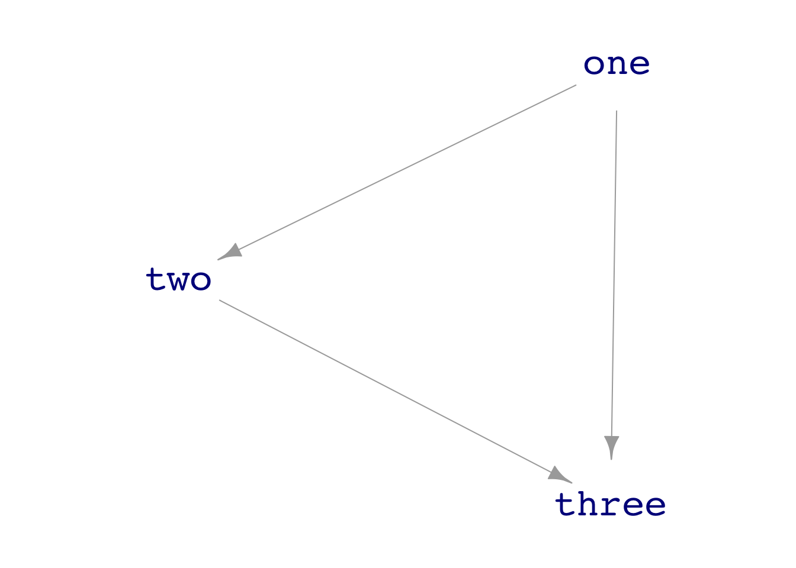
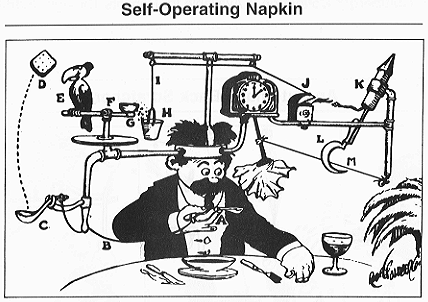

dag_draw(dag08)
DAGS and simulations
20.1 [Technical] Collect a sample from a DAG simulation.
20.2 [Technical] Examine the formulas behind a DAG simulation and compare to the results of a regression model trained on a sample from the DAG simulation.
20.3 [Conceptual] Recognize properties of a DAG. i. Identify exogenous nodes. ii. Identify all pathways between two specified end nodes. iii. On a given pathway, is there causal flow from one end node to another? iv. On a given pathway, is there a causal flow from some node on the pathway to both end nodes?
dag_draw() to draw a picture of the dag08 directed acyclic graph. From this graph, explain why node c is exogenous and why x and y are not.dag_draw(dag08)
Node C is exogenous because it has no incoming arrows.
print() to view the formulas used by dag08 to simulate data. What about the formula for y indicates that it’s receives inputs from x and c.print(dag08)c ~ exo()
x ~ c + exo()
y ~ x + c + 3 + exo()The right-hand side of the formula for y says that y will be calculated as the sum of x and c (plus 3 plus some random noise). That is, x and c directly shape the value of y.
y: an intercept, an x coefficient, and a c coefficient. (There is also some random input from an exogenous source unrelated to c or x.) What are the numerical values of the three coefficients?From the formula for y in the dag, the coefficients are 1 for x, 1 for c, and 3 for the intercept.
dag08 and use it to train the model with specification y ~ x. Do the coefficients reported match those you found in part (c)? (If you are not sure, use a bigger sample size, say \(n=1000\) or even bigger.)Samp <- sample(dag08, size=1000)
lm(y ~ x, data=Samp) |> conf_interval()# A tibble: 2 × 4
term .lwr .coef .upr
<chr> <dbl> <dbl> <dbl>
1 (Intercept) 2.83 2.90 2.98
2 x 1.36 1.41 1.47The model says the x coefficient is about 1.5, not the same as in the DAG formula for y.
y ~ x + c. How do the coefficients for this model compare to those you found in (3)?Samp <- sample(dag08, size=1000)
lm(y ~ x + c, data=Samp) |> conf_interval()# A tibble: 3 × 4
term .lwr .coef .upr
<chr> <dbl> <dbl> <dbl>
1 (Intercept) 2.90 2.97 3.03
2 x 0.919 0.983 1.05
3 c 0.901 0.989 1.08When we include both x and c in the model specification, the coefficients work out to match those of the DAG formula for y.
In dag08 there are two paths connecting x andy. One path is direct, \(X \longrightarrow Y\). The other path is indirect, \(X \longleftarrow C \longrightarrow Y\).
x to y?x and y?x to y.c to each of x and y.dag_school2 is a highly simplistic model of the relationship between expenditures on schools and student outcomes in terms of, say, standardized test scores.dag_draw(dag_school2, vertex.label.cex=1, vertex.size=40)
There is a direct pathway from expenditure to outcome as well as another, indirect pathway.
expenditure to outcome?expenditure and outcome? Which one?dag_school2. Is a higher expenditure connected to a higher outcome?print(dag_school2)culture ~ unif(-1, 1)
expenditure ~ 12000 + 4000 * culture + exo(1000)
participation ~ (50 + 30 * culture + exo(15)) %>% pmax(0) %>%
pmin(100)
outcome ~ 1100 + 0.01 * expenditure - 4 * participation + exo(50)The formula for Outcome has a positive coefficient (0.01) on expenditure. So when expenditure goes up, so will outcome. The magnitude of the coefficient is neither here nor there. Remember that there are always units associated with a coefficient. It’s impossible to say whether a magnitude is large or small unless you know the units.
dag_school2 and use it to train the model outcome ~ expenditure. Is the coefficient on expenditure consistent with what you found in (1)? (If you aren’t sure, use a larger sample size, say 10,000.) What about the coefficient on expenditure leads to your conclusion?Samp <- sample(dag_school2, size=1000)
lm(outcome ~ expenditure, data=Samp) |> conf_interval()# A tibble: 2 × 4
term .lwr .coef .upr
<chr> <dbl> <dbl> <dbl>
1 (Intercept) 1191. 1215. 1239.
2 expenditure -0.0179 -0.0160 -0.0140The coefficient on Expenditure is negative in contrast to the known positive coefficient in the DAG formula for Outcome.
In the DAG, Outcome is influenced negatively by Participation. And Expenditure is influenced positively by Participation. The two effects of Participation combine to produce an overall negative link between Expenditure and Outcome. By overall, we mean the combination of the direct Expenditure to Outcome link and the indirect path from Expenditure to Outcome via Participation.
In this task, you will construct DAGs using dag_make() and draw them using dag_draw().
A DAG is defined by a series of tilde expressions, one for each node in the graph. The tilde expression for a node has the node’s name on the left-hand side of the tilde. The right-hand side contains the nodes which serve as inputs to the node named on the left-hand side. If there are no inputs, write exo().
For example, consider a DAG with three nodes: one, two, and three. To define a DAG where node two receives input from node one, and node three receives input from nodes one and two, use make_dag() with three tilde expressions:
example_dag <- dag_make(
one ~ exo(),
two ~ one,
three ~ two + one
)
dag_draw(example_dag)
The right-hand side of a formula can be any arithmetic expression involving the node names, but we will keep it simple: just use + to separated the node names. If a node receives no inputs, the right-hand side should be simply exo() to mark that node as exogenous.
one, instead of being exogenous, takes as input one of the other two nodes in example_dag?The graph would become cyclic, hence not a DAG. Notice that by using a node on the right-hand side of a tilde expression only when it has already been created by a previous tilde expression, you guarantee that the graph will be acyclic.

Professor Butts and the Self-Operating Napkin (1931). Soup_spoon (A) is raised to mouth, pulling string (B) and thereby jerking ladle (C), which throws cracker (D) past toucan (E). Toucan jumps after cracker and perch (F) tilts, upsetting seeds (G) into pail (H). Extra weight in pail pulls cord (I), which opens and ignites lighter (J), setting off skyrocket (K), which causes sickle (L) to cut string_m (M), allowing pendulum with attached napkin to swing back and forth, thereby wiping_chin.
Watch your spelling of node names! Use this command to draw your napkin_dag:
dag_draw(napkin_dag, vertex.label.cex=.5, vertex.size=10, edge.arrow.size = 0.2)napkin_dag <- dag_make(
soup_spoon ~ exo(),
string ~ soup_spoon,
ladle ~ string,
cracker ~ ladle,
toucan ~ cracker,
perch ~ toucan,
seeds ~ perch,
pail ~ seeds,
cord ~ pail,
lighter ~ cord,
skyrocket ~ lighter,
sickle ~ skyrocket,
string_m ~ sickle,
wiping_chin ~ string_m
)
dag_draw(napkin_dag, vertex.label.cex=.5, vertex.size=10, edge.arrow.size = 0.2)